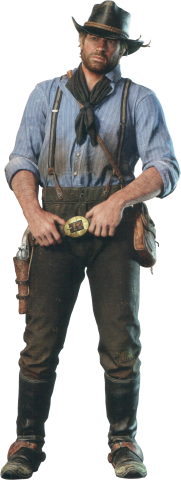
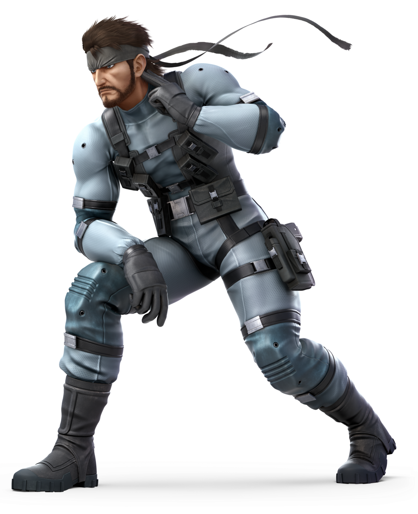

Aurthur Morgan
A high-ranking member of the Van der Linde gang, Arthur deals with the decline of the Wild West while attempting to survive against government forces and other adversaries in a fictionalized representation of the American frontier.
"You don't get to live a bad life and have good things happen to you." -Arthur Morgan.
more

Lara croft
an English archaeologist, treasure hunter and tomb raider. Born to an aristocratic family, Lara is generally disinterested in upper class society, finding it stifling and boring. She takes far more interest in delving into the secrets of the past and finding what is believed to not even exist.
more
Solid Snake
Solid Snake, real name David, was a former spy, special operations soldier, and mercenary. Possessing an IQ of 180 and fluent in six languages, the fame he achieved from his military exploits earned him such monikers as "Legendary Hero," and "the Man Who Makes the Impossible Possible."
more
